風吹山弁財天院/和歌山県岩出町
大阪と和歌山の府県境に風吹峠という場所がある。
名前からするとさわやかな風が吹き抜ける風光明美なトコロかと思われがちだが、実際に行ってみるとトラックの巻き起こす砂煙が荒れ狂う男気満点の西部劇みたいな街道である。
そんな荒くれ者の闊歩するトラック街道を走っていると一瞬「？！」と思えるモノが見える。
周辺はトラック街道と造成中の山。まるで親の仇のように一本の木も生えていない火星のような場所に木々が生えてこんもりとした一画があるのだ。
そこは街道と造成中の山に出入りするトラックしか通らない未舗装の工事用道路に挟まれた小〜さな幼稚園の庭程度の広さの雑木林である。
そんな小さな林の木々の間に見える何かとは・・・。
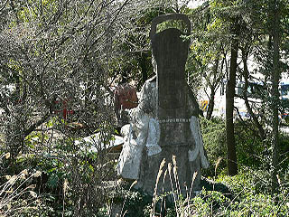
こんなお方です。
頭の中の地図が目的地とガソリンスタンドとトイレと食堂と仮眠所で構成されているプロドライバーの方の目には全く入らないであろうこの面妖なるコンクリ像のある林、表に回り込むとこんな感じです。
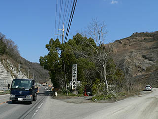
「風吹山弁財天院」と大書された看板がある。
この日は風吹峠の名の通り時折激しい風が吹いていた。しかしその風は埃まみれの風だったのは言う迄もない。
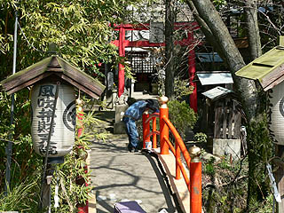
車を停め、早速境内に入ってみる。境内は街道下の暗渠から現れて暗渠に消えていくU字型の小さな川と木々に囲まれている。その様はまるで周囲の荒くれた風景から結界をはっているかのようだ。ただトラックの騒音の侵入を防ぐにはあまりにも小さな川である。川には思いっきり白濁した水が流れていた。
その川を渡る橋の欄干を塗り直している方に挨拶をして、いよいよ境内を探索する。
狭い境内には色々なグッドアイテムが詰まっているが鬱蒼としているので見通しが悪い。
橋を渡って最初に目に付くのがこの百度廻と書かれた謎のオブジェ。百度石という事なのだろう。
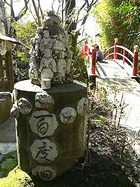 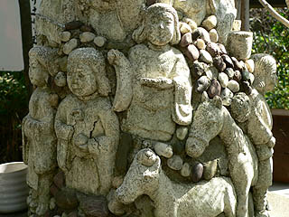
コンクリートの円柱の上に展開されたてんこ盛りワールド。
神様なのだろうか、幾つかの人物像と動物のレリーフ、そしてその隙間にはびっちりと小石が埋め込まれている。
台座の回りには十二支のレリーフがあしらわれている。これは一体何なんだ？
そして鳥居を潜ると英霊殿という倉庫のような建物がある。その上には・・・
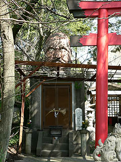 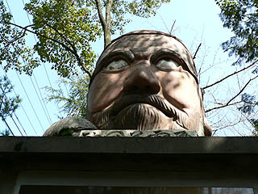
生首が乗っている〜。これは一体何だ？ダルマさんなのだろうか？上目遣いの目が恐いぞ。
戦没者の霊を供養するためのお堂なのだろう。中には地獄絵図や観音像その他もろもろの奉納品が詰まっているらしいが現在内部は公開していない。
無念なり。
で、その参道を挟んだ対面には風吹えびす神社なる祠が。
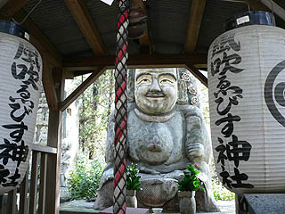
その祠の向こう側にはこんな素敵な恵比寿様がおわす。
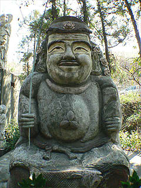
釣り竿を持って鯛を従えた恵比須さん、心なしか某カルト教壇のあの人に似ているような気がするぞ。
恵比寿さんの福耳の脇には花があしらわれているのがチャームポイントとお見受けいたしました。それにしてもこの表情、実にいかしている。
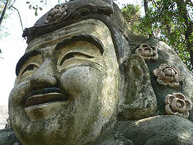 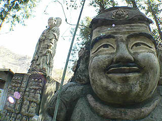
さらにその恵比寿さんの隣には幸福地蔵菩薩なるお地蔵さんが立っている。この辺、神仏合習とかいう大層なモノではなく、何となくありがたいものを集めてみました的なノリが垣間見える。
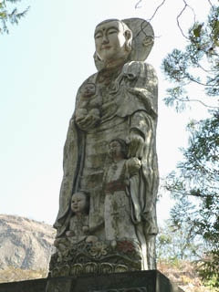 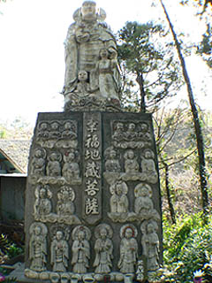
お地蔵さんは3〜4メートル程の高さだと思う。足元のコドモの表情がかなり無気味でした。
一本の木も生えてない山をバックに立っているコンクリのお地蔵さん、チョット寂し気な感じがする。
注目なのが台座正面の地蔵レリーフ。並々ならぬ造型センスが炸裂。
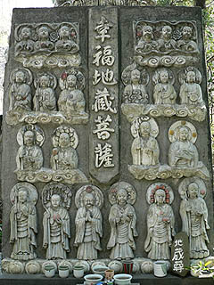
中段のお地蔵さんには交通安全とか延命などと刻まれている。確かに交通安全はこの街道沿いにあって重要なキーワードのように思える。
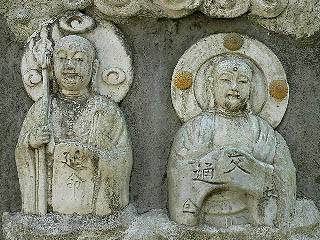 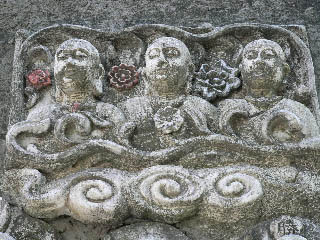
台座は幸福殿といい左脇に扉があった。看板には水子地蔵尊、観音像、写経奉納などと書かれていたが勿論内部の様子など伺い知る事も出来ずその鉄製の扉をジ〜ッと見るだけ。
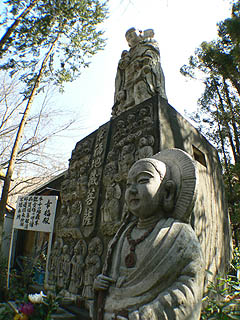 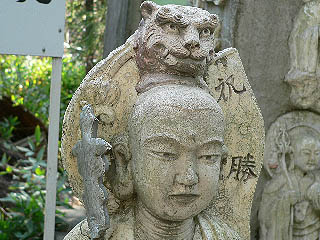
幸福殿の左右にも素敵なお地蔵さんがいた。ここの像は皆コンクリートで出来ているのだが、コンクリ像独特のヘタウマ感がなく、とても綺麗に仕上げてある。お地蔵さんに関してはどちらかと言うと写実的な顔つきである。でもその写実的な感じが返って違和感ビンビンなんですけど。
この幸福地蔵の隣には風吹荒神の祠が建っており、そこも交通安全を祈願している。
で、一番奥に鎮座ましますのが当院最大のコンクリ像風吹弁財天である。車道から見えたのはかの弁天様の後ろ姿であった。
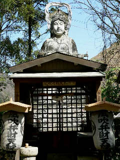 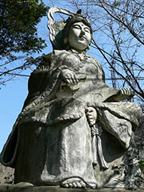
大きさは台座込みで7メートル、本体は5メートル程であろうか。
これまたかなり写実的なコンクリ像だ。しかしその写実っぷり、入魂の逸品も誰にも注目される事なくトラックの粉塵にまみれていて、有り様そのものが悲惨でした。
丁度、近在の家族連れの方達が参拝に来たので話を伺う。詳しい事はわからないが何時の間にか仏様が出来ていたので近所だし来るようになった、と仰っていた。おばあちゃん、これは仏様じゃなくて弁天様だそうですよ。ま、いいですけど。
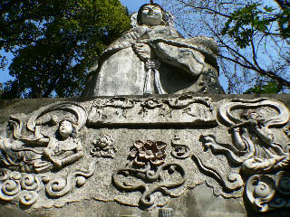
台座には気合いの入ったレリーフが施されている。気合いが入れば入る程、空回りしてしまっている気がする。なんせ環境が・・・
建立したのは原田啓之助というお方。子供の頃から信仰しており、現在は風吹トンネルの開通と共に荒れ果ててしまったという弁天様を再興しようと思い立ち、昭和42年に大弁天像を建立したという。胎内には近所の雑木林で偶然拾ったという弁天像を納めてあるそうだ。
その後、10年の間に百度廻、英霊殿、幸福地蔵、恵比寿像、荒神社というかなり個性的な仏像群などを立続けに建立したのである。
そう、ここは原田氏の個人的な信仰心の発露によって作られた俺ワールドなのである。
原田氏は戦争で長男を亡くされている。境内に充満する戦死者の慰霊の空気はそこに起因すると思われる。
弁天像の制作にあたっては原田氏の陶芸の師匠でもある角田蘇風氏に依頼したという。角田氏は彫刻家でもあるそうで、幸福地蔵、恵比寿、像百度廻なども角田氏が手掛け、原田氏も手伝ったそうだ。なるほど確かにプロの彫刻家が手掛けただけあって大変出来が良い。
ところで、橋の欄干を塗り替えていた方は何と原田氏の御子息だった。
これだけ（あらゆる意味で）立派な弁天様はそうそうない由を伝えると大変御満悦気味だった。
前に述べたようなハナシを色々と話を伺ったのだがその半分はトラックの爆音に消され、残り半分は和歌山弁なのだろうか、それとも深遠過ぎる内容だったのか、私にとっては意味不明の話が延々と続いてました・・・
ここは今でも参拝客が結構来るそうだ。かつては祭りなども執り行っていたそうだが、現在はそれもあまりやらなくなってしまったそうである。
現在管理されている御子息も高齢ゆえ先々の事を若干心配しておられたのが印象的だった。
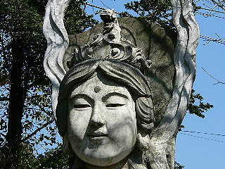
この風吹峠もかつてはもっと長閑なところだったという。トラック街道に建つ弁天様、ある意味現代ニッポンを象徴するような神社（寺？）だった。
風吹峠を御通行の大型車両のドライバーさんには原田氏の執念の賜物である弁天様に間違っても突っ込む事のなき様、お願いする次第であります。
2005.3.
情報提供はお寺が大好き！の公仁さんです
珍寺大道場 HOME